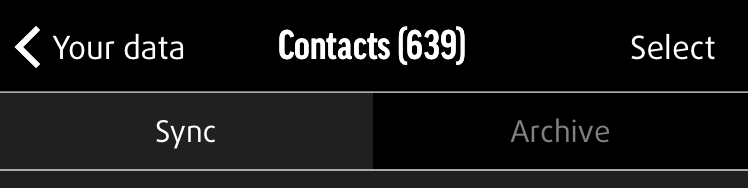

Teilen gespeicherter Daten mit anderen Apps
Synchronisierte und archivierte Daten können über die App geteilt werden. Wählen Sie die Daten (z. B. Fotos, Videos, Dokumente usw.) aus, die Sie teilen möchten. Unten links finden Sie das Teilen-Symbol, das Ihnen nach Antippen Ihre Möglichkeiten zum Teilen anzeigt, so wie Sie sie auch auf Ihrem Gerät sehen würden.
